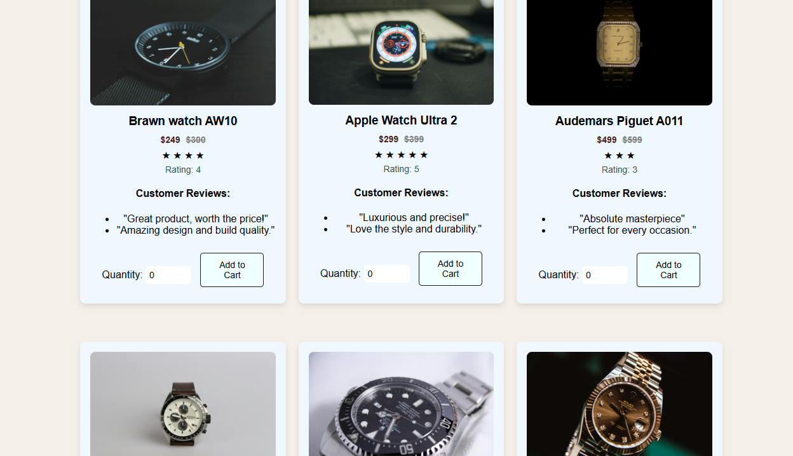
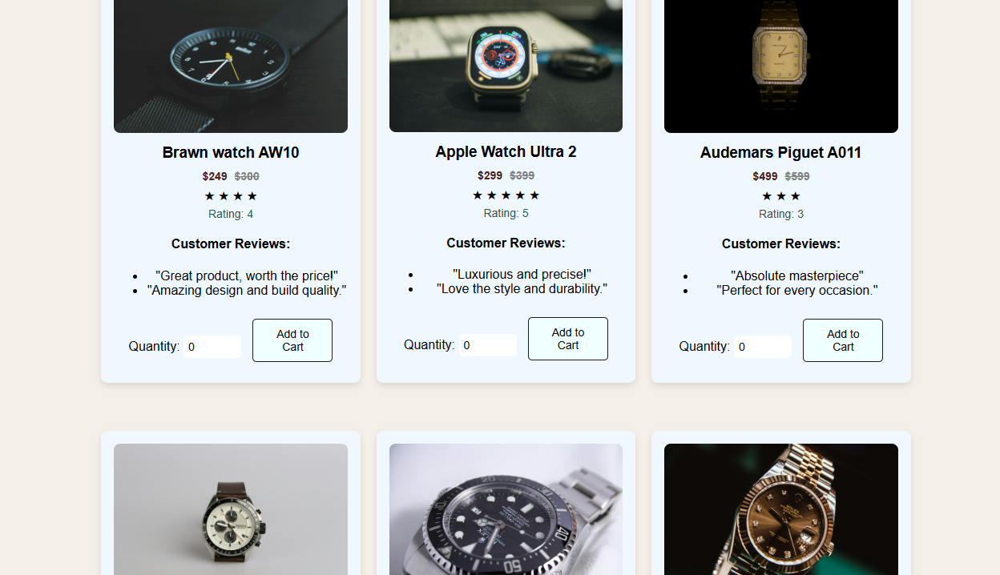

1.Homepage Reference


We Took Some Ideas Through This Website To Design Our Home Page.
Link of the Website: OBAKU
We Took Some Ideas Through This Website To Design Our Home Page.
Link of the Website: OBAKU
We Took Some Ideas Through This Website To Design Our Blog Page.
Link of the Website: OBAKU


We Took Some Ideas Through This Website To Design Our Home Page about our website featured in different platforms.
Link of the Website: OBAKU
 

We Took Some Ideas Through This Website To Design And Create Our Product Page About the Products Placement.
Link of the Website: JOMASHOP


We Took Some Ideas Through This Website To Design And Create Our HomePage.We have taken some ideas about that join our community as well as footer section but both are completely different in colors and styles.
Link of the Website: OBAKU
| Feature | Explaination |
|---|---|
To the top button: |
We have the feature of button to scroll to the top for the user for better shopping experience.Whenever the user scroll down this button appears in the buttom right side of the page so that user goes directly to the top of the page instead of scrolling it. |